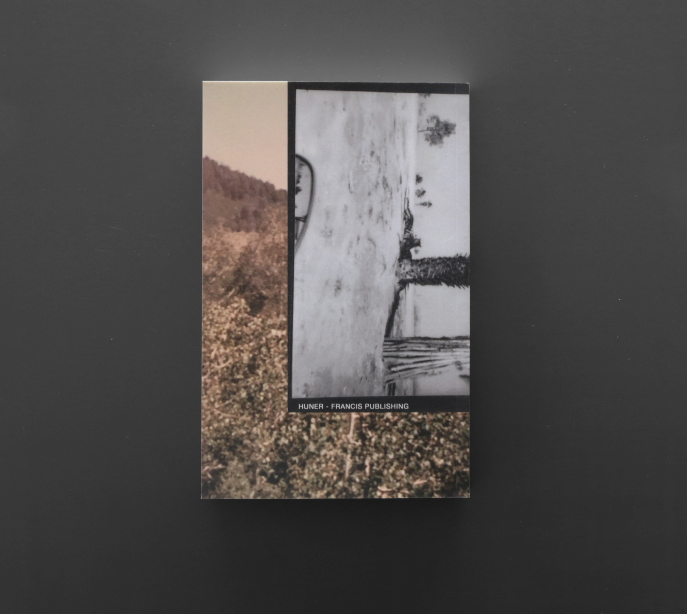
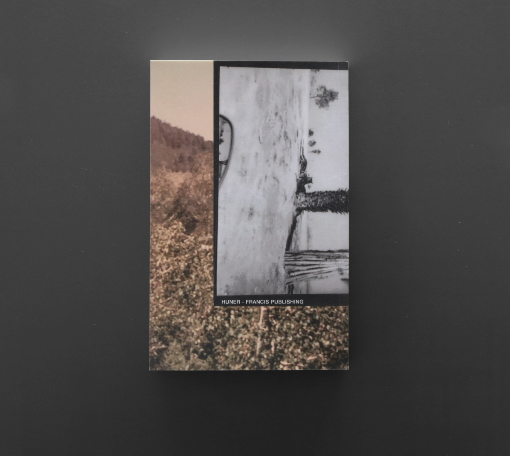

Micah H. Weber, et al., Reference:Work
laser print / perfect bound
$20 + $3.99s/h. ***Donate $20 to the Palestinian Youth Movement to order a copy.
(Email receipt + address + $3.99 s/h paypal, to huner.francis@gmail.com)
 
